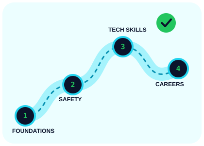

IT support specialist
Helps users resolve device, software, account, and access issues. Strong troubleshooting and communication skills are useful foundations.
Explore: operating systems, networking, identity and access.
LEARN AT YOUR OWN PACE
You do not need to know everything before you begin. Learn the fundamentals, practice safely, and gradually explore the areas that interest you.

A BEGINNER'S ROADMAP
Move through the stages at a pace that fits your schedule. Revisit earlier topics whenever you need.
Learn basic computer concepts, operating systems, browsers, networks, files, and how information moves online.
Learn account protection, phishing awareness, updates, backups, privacy settings, and safe browsing.
Build familiarity with command-line tools, basic scripting, networking, logs, and how systems are configured.
Use authorized training labs, beginner challenges, and intentionally vulnerable practice environments. Never test systems without permission.
Explore a role, set a small learning goal, document what you learn, and build evidence of your skills through projects.
POSSIBLE DIRECTIONS
Role names and responsibilities vary by organization. These examples can help you decide what to research next.
Helps users resolve device, software, account, and access issues. Strong troubleshooting and communication skills are useful foundations.
Explore: operating systems, networking, identity and access.
Reviews security alerts and logs, investigates suspicious activity, and helps an organization respond to incidents.
Explore: networking, log analysis, incident response.
Assesses systems for weaknesses within an approved scope and communicates findings so they can be fixed.
Explore: web fundamentals, scripting, ethics, report writing.
Helps configure access controls, endpoint protection, security policies, and secure system settings.
Explore: account management, system administration, policy.
Collects and examines digital evidence using documented, careful processes to help understand what happened.
Explore: operating systems, evidence handling, timelines.
Works with developers to identify and reduce security weaknesses in software and web applications.
Explore: programming, web security, code review.
TRUSTED STARTING POINTS
Start with reputable sources and always follow the rules of any platform or lab.
Practical advice on strong passwords, multifactor authentication, software updates, and phishing.
Cybersecurity guidance and frameworks that help organizations understand and manage security risk.
Interactive cybersecurity learning rooms, including beginner-friendly practice. Use only the authorized learning environments.
Explore public-sector cybersecurity work and role information.
MAKE YOUR NEXT MOVE
A short, consistent learning session is more useful than trying to master everything at once.